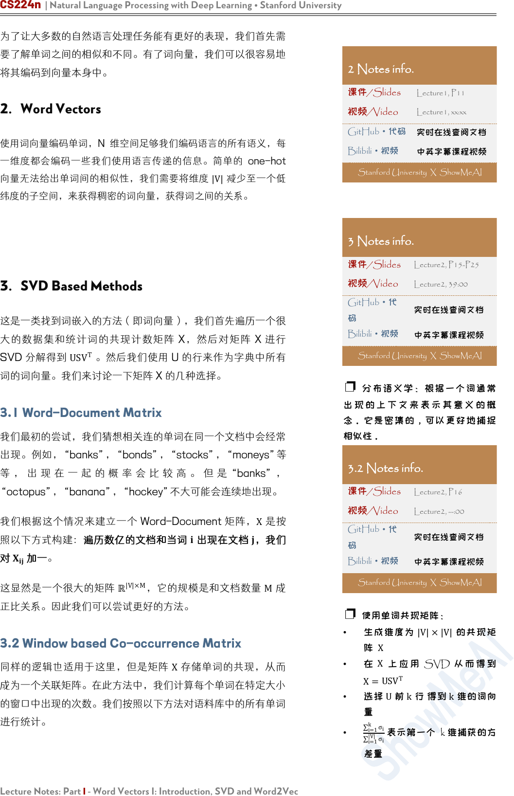
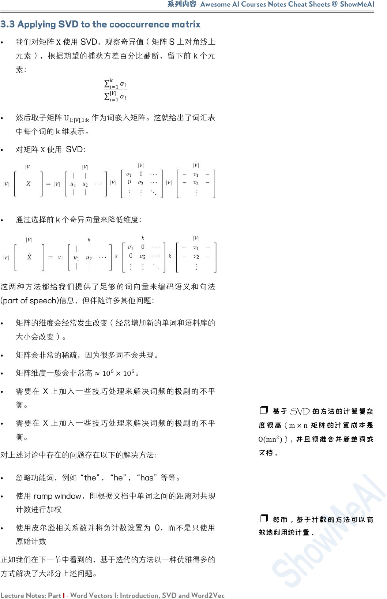
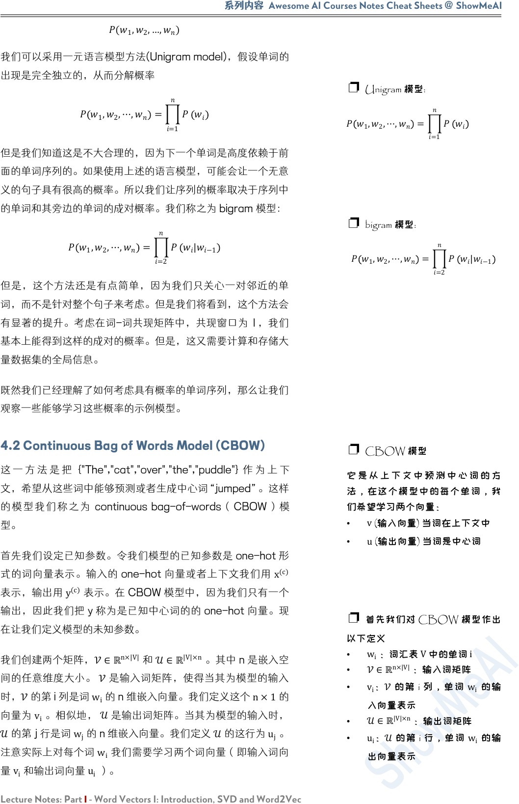
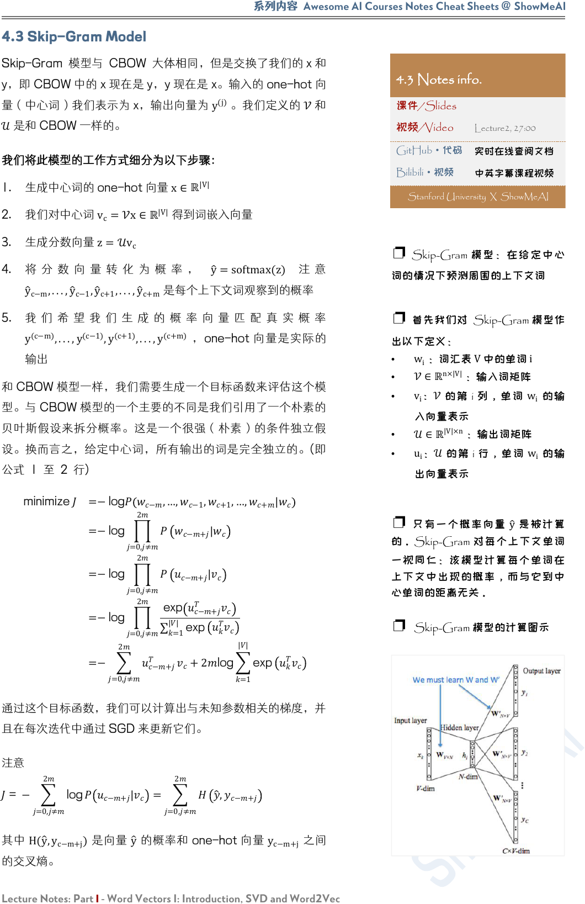
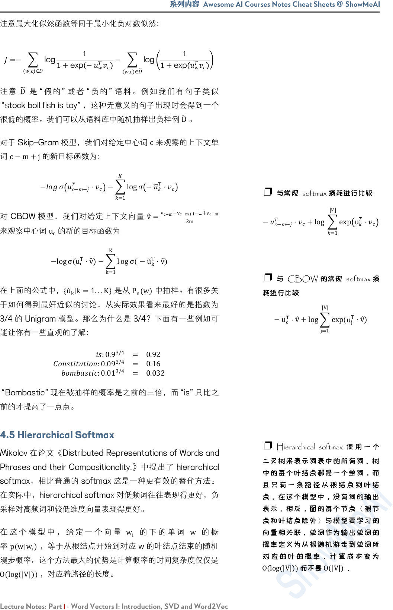
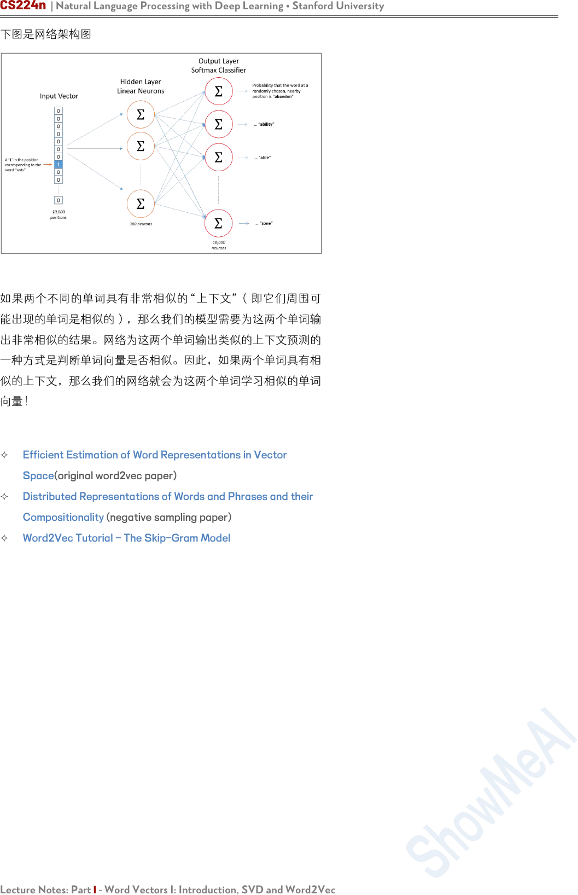

CS224n | Natural Language Processing with Deep Learning • Stanford University
Lecture Notes: Part I - Word Vectors I: Introduction, SVD and Word2Vec
Lecture Notes: Part I
Word Vectors I: Introduction, SVD and Word2Vec
CS224n 是顶级院校斯坦福出品的深度学习与自然语言处理方
向 专 业 课 程 ， 核 心 内 容 覆 盖 RNN 、 LSTM 、 CNN 、
transformer、bert、问答、摘要、文本生成、语言模型、阅读
理解等前沿内容。
Singular Value Decomposition (SVD) 奇异值分解。这组笔记
首先介绍了自然语言处理(NLP)的概念及其面临的问题。然后我
们继续讨论将单词表示为数字向量的概念。最后，讨论了常用的
词向量设计方法。
笔记核心词：
自然语言处理/Natural Language Processing(NLP)、词向量
/Word Vectors 、 Singular Value Decomposition 、 Skip-
gram、Negative Sampling 、transformer、Continuous Bag
of Words(CBOW)、Hierarchical Softmax、Word2Vec
课程全部资料和信息已整理发布，扫描下方任意二维码，均可
获取！！
微信公众号·全套资料
回复 CS224n
底部菜单栏
Bilibili·课程视频
视频简介
置顶评论
GitHub·项目代码
阅读 ReadMe
点击超链接

系列内容
Awesome AI Courses Notes Cheat Sheets
@
ShowMeAI
Lecture Notes: Part I - Word Vectors I: Introduction, SVD and Word2Vec
1. Introduction to Natural Language Processing
1.1 What is so special about NLP？
人类的语言有什么特别之处？人类语言是一个专门用来表达意义
的系统，而不是由任何形式的物理表现产生的。在这方面上，它
与视觉或任何其他机器学习任务都有很大的不同。
大多数单词只是一个语言学以外的的符号：单词是一个映射到所
指(signified 想法或事物)的能指(signifier)。
例如，“rocket”一词指的是火箭的概念，因此可以引申为火箭
的实例。当我们使用单词和字母来表达符号时，也会有一些例
外，例如“whoompaa”的使用。最重要的是，这些语言的符号
可以被 编码成几种形式：声音、手势、文字等等，然后通过连
续的信号传输给大脑，大脑本身似乎也能以一种连续的方式对这
些信号进行解码。人们在语言哲学和语言学方面做了大量的工作
来概念化人类语言，并将词语与其参照、意义等区分开来。
1.2 Examples of Tasks
自然语言处理有不同层次的任务，从语言处理到语义解释再到语
篇处理。自然语言处理的目标是通过设计算法使得计算机能够
“理解”语言，从而能够执行某些特定的任务。不同的任务的难
度是不一样的。
▐░ Easy
• 拼写检查 Spell Checking
• 关键词检索 Keyword Search
• 同义词查找 Finding Synonyms
▐░ Medium
• 解析来自网站、文档等的信息
▐░ Hard
• 机器翻译 Machine Translation
• 语义分析 Semantic Analysis
• 指代消解 Coreference
• 问答系统 Question Answering
1.3 How to Represent Words?
在所有的 NLP 任务中，第一个也是可以说是最重要的共同点是
我们如何将单词表示为任何模型的输入。在这里我们不会讨论早
期的自然语言处理工作是将单词视为原子符号 atomic symbols
1.1 Notes info.
课件/Slides
Lecture 1, P10
视频/Video
Lecture -, --:--
GitHub·代码
实时在线查阅文档
Bilibili
·视频
中英字幕课程视频
Stanford University X ShowMeAI
❐ Natural language is a
discrete[离散的] / symbolic[符号的]
/ categorical[分类的] system.
1.3 Notes info.
课件/Slides
Lecture1, P11
视频/Video
Lecture1, xx:xx
GitHub·代码
实时在线查阅文档
Bilibili·视频
中英字幕课程视频
Stanford University X ShowMeAI

CS224n | Natural Language Processing with Deep Learning • Stanford University
Lecture Notes: Part I - Word Vectors I: Introduction, SVD and Word2Vec
为了让大多数的自然语言处理任务能有更好的表现，我们首先需
要了解单词之间的相似和不同。有了词向量，我们可以很容易地
将其编码到向量本身中。
2. Word Vectors
使用词向量编码单词，N 维空间足够我们编码语言的所有语义，每
一维度都会编码一些我们使用语言传递的信息。简单的 one-hot
向量无法给出单词间的相似性，我们需要将维度
|V|
减少至一个低
纬度的子空间，来获得稠密的词向量，获得词之间的关系。
3. SVD Based Methods
这是一类找到词嵌入的方法（即词向量），我们首先遍历一个很
大的数据集和统计词的共现计数矩阵 X，然后对矩阵 X 进行
SVD 分解得到 US
V
T
。然后我们使用 U 的行来作为字典中所有
词的词向量。我们来讨论一下矩阵 X 的几种选择。
3.1 Word-Document Matrix
我们最初的尝试，我们猜想相关连的单词在同一个文档中会经常
出现。例如，“banks”，“bonds”，“stocks”，“moneys”等
等 ， 出 现 在 一 起 的 概 率 会 比 较 高 。 但 是 “banks” ，
“octopus”，“banana”，“hockey”不大可能会连续地出现。
我们根据这个情况来建立一个 Word-Document 矩阵，
X
是按
照以下方式构建：遍历数亿的文档和当词
出现在文档
，我们
对
加一。
这显然是一个很大的矩阵
ℝ
|V|×M
，它的规模是和文档数量
M
成
正比关系。因此我们可以尝试更好的方法。
3.2 Window based Co-occurrence Matrix
同样的逻辑也适用于这里，但是矩阵
X
存储单词的共现，从而
成为一个关联矩阵。在此方法中，我们计算每个单词在特定大小
的窗口中出现的次数。我们按照以下方法对语料库中的所有单词
进行统计。
2 Notes info.
课件/Slides
Lecture1, P11
视频/Video
Lecture1, xx:xx
GitHub
·代码
实时在线查阅文档
Bilibili·视频
中英字幕课程视频
Stanford University X ShowMeAI
3 Notes info.
课件/Slides
Lecture2, P15-P25
视频/Video
Lecture2, 39:00
GitHub·代
码
实时在线查阅文档
Bilibili·视频
中英字幕课程视频
Stanford University X ShowMeAI
❐ 分布语义学：根据一个词通常
出 现 的 上 下 文 来 表 示 其 意 义 的 概
念。它是密集的，可以更好地捕捉
相似性。
3.2 Notes info.
课件/Slides
Lecture2, P16
视频/Video
Lecture2, --:00
GitHub
·代
码
实时在线查阅文档
Bilibili·视频
中英字幕课程视频
Stanford University X ShowMeAI
❐ 使用单词共现矩阵：
• 生成维度为
|V|×|V|
的共现矩
阵
X
• 在
X
上 应 用 SVD 从 而 得 到
X=
USV
T
• 选择
U
前
k
行 得到
k
维的词向
量
•
i=1
k
σ
i
i=1
|V|
σ
i
表示第一个 k 维捕获的方
差量

系列内容
Awesome AI Courses Notes Cheat Sheets
@
ShowMeAI
Lecture Notes: Part I - Word Vectors I: Introduction, SVD and Word2Vec
3.3 Applying SVD to the cooccurrence matrix
• 我们对矩阵
X
使用 SVD，观察奇异值（矩阵 S 上对角线上
元素），根据期望的捕获方差百分比截断，留下前 k 个元
素：
=1
=1
||
• 然后取子矩阵
U
1:|V|,1:k
作为词嵌入矩阵。这就给出了词汇表
中每个词的 k 维表示。
•
对矩阵 X使用 SVD：
•
通过选择前 k 个奇异向量来降低维度：
这两种方法都给我们提供了足够的词向量来编码语义和句法
(part of speech)信息，但伴随许多其他问题：
•
矩阵的维度会经常发生改变（经常增加新的单词和语料库的
大小会改变）。
• 矩阵会非常的稀疏，因为很多词不会共现。
•
矩阵维度一般会非常高 ≈10
6
×10
6
。
•
需要在 X 上加入一些技巧处理来解决词频的极剧的不平
衡。
• 需要在 X 上加入一些技巧处理来解决词频的极剧的不平
衡。
对上述讨论中存在的问题存在以下的解决方法：
•
忽略功能词，例如 “the”，“he”，“has” 等等。
•
使用 ramp window，即根据文档中单词之间的距离对共现
计数进行加权
• 使用皮尔逊相关系数并将负计数设置为 0，而不是只使用
原始计数
正如我们在下一节中看到的，基于迭代的方法以一种优雅得多的
方式解决了大部分上述问题。
❐ 基于 SVD 的方法的计算复杂
度很 高 (
m×n
矩阵 的计算成本是
O(
mn
2
)
)，并且很难合并新单词或
文档。
❐ 然而，基于计数的方法可以有
效地利用统计量。

CS224n | Natural Language Processing with Deep Learning • Stanford University
Lecture Notes: Part I - Word Vectors I: Introduction, SVD and Word2Vec
4. Iteration Based Methods - Word2vec
这里我们尝试一个新的方法。我们可以尝试创建一个模型，该模
型能够一次学习一个迭代，并最终能够对给定上下文的单词的概
率进行编码，而不是计算和存储一些大型数据集(可能是数十亿
个句子)的全局信息。
这个想法是设计一个模型，该模型的参数就是词向量。然后根据
一个目标函数训练模型，在每次模型的迭代计算误差，并遵循一
些更新规则，该规则具有惩罚造成错误的模型参数的作用，从而
可以学习到词向量。这个方法可以追溯到 1986 年，我们称这
个方法为“反向传播”，模型和任务越简单，训练它的速度就越
快。
已经很多人按照这个思路测试了不同的方法。[Collobert et al.,
2011] 设计的模型首先将每个单词转换为向量。对每个特定的任
务（命名实体识别、词性标注等等），他们不仅训练模型的参
数，同时也训练单词向量，计算出了非常好的词向量的同时取得
了很好的性能。
在这里 ， 我们介绍一 个 非 常有效 的 概 率模型 ：Word2vec。
Word2vec 是一个软件包实际上包含：
•
两 个 算 法 ： continuous bag-of-words （ CBOW ） 和
skip-gram。CBOW 是根据中心词周围的上下文单词来预
测该词的词向量。skip-gram 则相反，是根据中心词预测
周围上下文的词的概率分布。
•
两 个 训 练 方 法 ： negative sampling 和 hierarchical
softmax。Negative sampling 通过抽取负样本来定义目
标，hierarchical softmax 通过使用一个有效的树结构来计
算所有词的概率来定义目标。
4.1 Language Models (Unigrams, Bigrams, etc.)
首先，需要创建一个模型来为一系列的单词分配概率。从例子开
始：
“The cat jumped over the puddle”
一个好的语言模型会给这个句子很高的概率，因为在句法和语义
上这是一个完全有效的句子。相似地，句子“stock boil fish is
toy”会得到一个很低的概率，因为这是一个无意义的句子。在
数学上，我们可以称为对给定 n 个词的序列的概率是：
4 Notes info.
课件/Slides
Lecture1, P19
视频/Video
Lecture1, 42:00
GitHub·代
码
实时在线查阅文档
Bilibili·视频
中英字幕课程视频
Stanford University X ShowMeAI
❐ 基于迭代的方法一次捕获一个
单词的共现情况，而不是像 SVD
方 法 那 样 直 接 捕 获 所 有 的 共 现 计
数。
❐ 这个模型依赖于语言学中一个
非常重要的假设，分布相似性，即
相似的词有相似的上下文。

系列内容
Awesome AI Courses Notes Cheat Sheets
@
ShowMeAI
Lecture Notes: Part I - Word Vectors I: Introduction, SVD and Word2Vec
(
1
,
2
,…,
)
我们可以采用一元语言模型方法(Unigram model)，假设单词的
出现是完全独立的，从而分解概率
1
,
2
,⋯,
=
=1
但是我们知道这是不大合理的，因为下一个单词是高度依赖于前
面的单词序列的。如果使用上述的语言模型，可能会让一个无意
义的句子具有很高的概率。所以我们让序列的概率取决于序列中
的单词和其旁边的单词的成对概率。我们称之为 bigram 模型：
1
,
2
,⋯,
=
=2
|
−1
但是，这个方法还是有点简单，因为我们只关心一对邻近的单
词，而不是针对整个句子来考虑。但是我们将看到，这个方法会
有显著的提升。考虑在词-词共现矩阵中，共现窗口为 1，我们
基本上能得到这样的成对的概率。但是，这又需要计算和存储大
量数据集的全局信息。
既然我们已经理解了如何考虑具有概率的单词序列，那么让我们
观察一些能够学习这些概率的示例模型。
4.2 Continuous Bag of Words Model (CBOW)
这 一 方 法 是 把 {"The","cat","over","the","puddle"} 作 为 上 下
文，希望从这些词中能够预测或者生成中心词“jumped”。这样
的模型我们称之为 continuous bag-of-words（ CBOW） 模
型。
首先我们设定已知参数。令我们模型的已知参数是 one-hot 形
式的词向量表示。输入的 one-hot 向量或者上下文我们用
x
(c)
表示，输出用 y
(c)
表示。在 CBOW 模型中，因为我们只有一个
输出，因此我们把 y 称为是已知中心词的的 one-hot 向量。现
在让我们定义模型的未知参数。
我们创建两个矩阵，
∈ℝ
n×|V|
和
∈ℝ
|V|×n
。其中 n 是嵌入空
间的任意维度大小。 是输入词矩阵，使得当其为模型的输入
时，的第 i 列是词 w
i
的 n 维嵌入向量。我们定义这个 n×1的
向量为 v
i
。相似地，
是输出词矩阵。当其为模型的输入时，
的第 j 行是词
w
j
的 n 维嵌入向量。我们定义
的这行为
u
j
。
注意实际上对每个词
w
i
我们需要学习两个词向量（即输入词向
量
v
i
和输出词向量
u
i
）。
❐ Unigram 模型:
1
,
2
,⋯,
=
=1
❐ bigram 模型:
1
,
2
,⋯,
=
=2
|
−1
❐ CBOW 模型
它 是 从 上 下 文 中 预 测 中 心 词 的 方
法，在这个模型中的每个单词，我
们希望学习两个向量：
•
v
(输入向量) 当词在上下文中
•
u
(输出向量) 当词是中心词
❐ 首先我们对 CBOW 模型作出
以下定义
•
w
i
：词汇表
V
中的单词
i
•
∈ℝ
n×|V|
：输入词矩阵
•
v
i
：
的第 i 列，单词
w
i
的输
入向量表示
•
∈ℝ
|V|×n
：输出词矩阵
•
u
i
：
的第 i 行，单词
w
i
的输
出向量表示

CS224n | Natural Language Processing with Deep Learning • Stanford University
Lecture Notes: Part I - Word Vectors I: Introduction, SVD and Word2Vec
我们将这个模型分解为以下步骤：
1. 我们为 大 小为 m 的 输入上下文 ， 生 成 one-hot 词向 量
(x
(c−m)
,...,x
(c−1)
,x
(c+1)
,...,x
(c+m)
∈
ℝ
|V|
)
2. 我 们 从 上 下 文
(v
c−m
=x
(c−m)
,v
c−m+1
=
x
(c−m+1)
,...,v
c+m
=x
(c+m)
∈ℝ
n
)得到嵌入词向量。
3. 对上述的向量求平均值 v
=
v
c−m
+v
c−m+1+...+v
c+m
2m
∈ℝ
n
。
4. 生成一个分数向量 z=
v
∈
ℝ
|V|
。当相似向量的点积越
高，就会令到相似的词更为靠近，从而获得更高的分数。
5. 将分数转换为概率 y
=softmax(z)∈ℝ
|V|
。
6. 我们希望生成的概率 y
∈ℝ
|V|
与实际的概率 y∈ℝ
|V|
匹配。
使得其刚好是实际的词就是这个 one-hot 向量。
如果有
和
，我们知道这个模型是如何工作的，那我们如何
学习这两个矩阵呢？
这需要创建一个目标函数。一般我们想从一些真实的概率中学习
一个概率，信息论提供了一个 度量两个概率分布的距离 的方
法。这里我们采用一个常见的距离/损失方法，交叉熵
H(y
,y)
。
在离散情况下使用交叉熵可以直观地得出损失函数的公式
H(
y
,y)=−
j=1
|V|
y
j
log y
j
上面公式中，y 是 one-hot 向量。因此损失函数可简化为：
H(
y
,y)=−y
j
log(
y
j
)
c 是正确词的 one-hot 向量的索引。考虑我们的预测是完美并
且
y
c
=1
的情况，我们可以计算
H(y
,y)=−1 log(1)=0
。因
此，对一个完美的预测，我们不会面临任何惩罚或者损失。现在
我们考虑一个相反的情况，预测非常差并且
y
c
=0.01
。和前面
类似，我们可以计算损失
H(y
,y)=−1 log(0.01)=4.605
。因
此，我们可以看到，对于概率分布，交叉熵为我们提供了一个很
好的距离度量。因此我们的优化目标函数公式为：
minimize =−log
|
−
,…,
−1
,
+1
,…,
+
=−log
|
=−log
exp
=1
||
exp
=−
+
log
=1
||
exp
我们使用 SGD 来更新所有相关的词向量 u
c
和 v
j
。
❐ 这里 softmax 是 一 个 常 用 的 函
数。它将一个向量转换为另外一个
向量，其中转换后的向量的第
i
个元
素是
e
y
i
k=1
|V|
e
y
k
。
• 因为该函数是一个指数函数，
所以值一定为正数；
• 通过除以
k=1
|V|
e
y
k
来归一化向
量（使得
k=1
|V|
y
k
=1
）得到概
率。
❐ 下 图 是 CBOW 模 型 计 算 图
示：
❐ 当
y
= y
时，
y
⟼H(y
,y)
为最
小 值 。 如 果 我 们 找 到 一 个
y
使 得
H(y
,y)
接近最小值，那么
y
≈ y
。
这意味着我们的模型非常善于预测
中心词！
❐ 为 了 学 习 向 量 （ 矩 阵
U
和
V
），CBOW 定义了一个成本，
衡量它在预测中心词方面的表现。
然后， 我 们通过更 新 矩阵
U
和
V
随机梯度下降来优化成本。
❐ SGD 对一个窗口计算梯度和更
新参数：
old
←
old
−α∇
J
new
←
old
−α∇
J

系列内容
Awesome AI Courses Notes Cheat Sheets
@
ShowMeAI
Lecture Notes: Part I - Word Vectors I: Introduction, SVD and Word2Vec
4.3 Skip-Gram Model
Skip-Gram 模型与 CBOW 大体相同，但是交换了我们的 x 和
y，即 CBOW 中的 x 现在是 y，y 现在是 x。输入的 one-hot 向
量（中心词）我们表示为 x，输出向量为
y
(j)
。我们定义的
和
是和 CBOW 一样的。
我们将此模型的工作方式细分为以下步骤：
1. 生成中心词的 one-hot 向量 x∈
ℝ
|V|
2. 我们对中心词
v
c
=x∈ℝ
|V|
得到词嵌入向量
3. 生成分数向量
z=v
c
4. 将 分 数 向 量 转 化 为 概 率 ， y
=softmax(z) 注 意
y
c−m
,...,y
c−1
,y
c+1
,...,y
c+m
是每个上下文词观察到的概率
5. 我 们 希 望 我 们 生 成 的 概 率 向 量 匹 配 真 实 概 率
y
(c−m)
,...,y
(c−1)
,y
(c+1)
,...,y
(c+m)
，one-hot 向量是实际的
输出
和 CBOW 模型一样，我们需要生成一个目标函数来评估这个模
型。与 CBOW 模型的一个主要的不同是我们引用了一个朴素的
贝叶斯假设来拆分概率。这是一个很强（朴素）的条件独立假
设。换而言之，给定中心词，所有输出的词是完全独立的。(即
公式 1 至 2 行)
minimize
=−log
−
,…,
−1
,
+1
,…,
+
|
=−log
=0,≠
2
−+
|
=−log
=0,≠
2
−+
|
=−log
=0,≠
2
exp
−+
=1
||
exp
=−
=0,≠
2
−+
+2log
=1
||
exp
通过这个目标函数，我们可以计算出与未知参数相关的梯度，并
且在每次迭代中通过 SGD 来更新它们。
注意
= −
=0,≠
2
log
−+
|
=
=0,≠
2
,
−+
其中 H(
y
,
y
c−m+j
)是向量
y
的概率和 one-hot 向量 y
c−m+j
之间
的交叉熵。
4.3 Notes info.
课件/Slides
视频/Video
Lecture2, 27:00
GitHub·代码
实时在线查阅文档
Bilibili
·视频
中英字幕课程视频
Stanford University X ShowMeAI
❐ Skip-Gram 模型：在给定中心
词的情况下预测周围的上下文词
❐ 首先我们对 Skip-Gram 模型作
出以下定义：
•
w
i
：词汇表
V
中的单词
i
•
∈ℝ
n×|V|
：输入词矩阵
•
v
i
：
的第 i 列，单词
w
i
的输
入向量表示
•
∈ℝ
|V|×n
：输出词矩阵
•
u
i
：
的第 i 行，单词
w
i
的输
出向量表示
❐ 只有一个概率向量
y
是被计算
的。Skip-Gram 对每个上下文单词
一视同仁：该模型计算每个单词在
上下文中出现的概率，而与它到中
心单词的距离无关。
❐ Skip-Gram 模型的计算图示

CS224n | Natural Language Processing with Deep Learning • Stanford University
Lecture Notes: Part I - Word Vectors I: Introduction, SVD and Word2Vec
4.4 Negative Sampling
让我们再回到目标函数上。注意对 |V|的求和计算量是非常大
的。任何的更新或者对目标函数的评估都要花费
O(|V|)
的时间
复杂度。一个简单的想法是不去直接计算，而是去求近似值。
在每一个训练的时间步，我们不去遍历整个词汇表，而仅仅是抽
取一些负样例。我们对噪声分布
P
n
(w)“抽样”，这个概率是和
词频的排序相匹配的。为加强对问题的表述以纳入负抽样，我们
只需更新其目标函数、梯度和更新规则。
Mikolov 在论文《Distributed Representations of Words and
Phrases and their Compositionality.》中提出了负采样。虽然
负采样是基于 Skip-Gram 模型，但实际上是对一个不同的目标
函数进行优化。考虑一对中心词和上下文词 (w,c)。这词对是来
自训练数据集吗？我们通过 P(D=1∣w,c)表示 (w,c)是来自语
料库。相应地， P(D=0∣w,c)表示 (w,c)不是来自语料库。
首先，我们对
P(D=1∣w,c)
用 sigmoid 函数建模：
(=1|,,)=
=
1
1+
−
现在，我们建立一个新的目标函数，如果中心词和上下文词确实
在语料库中，就最大化概率 P(D=1∣w,c)，如果中心词和上下
文词确实不在语料库中，就最大化概率
P(D=0∣w,c)
。我们对
这两个概率采用一个简单的极大似然估计的方法（这里我们把
θ
作为模型的参数，在我们的例子是
和
）
= argmax
(,)∈
(=1|,,)
(,)∈
(=0|,,)
= argmax
(,)∈
(=1|,,)
(,)∈
( 1−(=1|,,))
= argmax
(,)∈
log (=1|,,)+
(,)∈
log (1−(=1|,,))
=argmax
(,)∈
log
1
1+
exp
−
+
(,)∈
log
1−
1
1+exp −
=argmax
(,)∈
log
1
1+exp −
+
(,)∈
log
1
1+
exp
4.4 Notes info.
课件/Slides
视频/Video
Lecture2, 29:00
GitHub
·代码
实时在线查阅文档
Bilibili·视频
中英字幕课程视频
Stanford University X ShowMeAI
❐ 因为 softmax 标 准化要对对所
有 分 数 求 和 ， CBOW 和 Skip
Gram 的损失函数 J 计算起来很昂
贵！
❐ sigmoid 函 数是 softmax 的 1D
版本，可用于建立概率模型
()=
1
1+
−
❐ Sigmoid 函数

系列内容
Awesome AI Courses Notes Cheat Sheets
@
ShowMeAI
Lecture Notes: Part I - Word Vectors I: Introduction, SVD and Word2Vec
注意最大化似然函数等同于最小化负对数似然：
=−
(,)∈
log
1
1+exp −
−
(,)∈
log
1
1+exp
注 意
D
是 “假 的 ”或 者 “负 的 ” 语 料 。 例如 我 们 有 句 子 类 似
“stock boil fish is toy”，这种无意义的句子出现时会得到一个
很低的概率。我们可以从语料库中随机抽样出负样例
D
。
对于 Skip-Gram 模型，我们对给定中心词
c
来观察的上下文单
词 c−m+j的新目标函数为：
−
−+
⋅
−
=1
log
−
⋅
对 CBOW 模型，我们对给定上下文向量
v
=
v
c−m
+v
c−m+1
+...+v
c+m
2m
来观察中心词 u
c
的新的目标函数为
−log σ(u
c
T
⋅v
)−
k=1
K
l og σ(−u
k
T
⋅v
)
在上面的公式中，
{
u
k
∣k=1...K}
是从
P
n
(w)中抽样。有很多关
于如何得到最好近似的讨论，从实际效果看来最好的是指数为
3/4 的 Unigram 模型。那么为什么是 3/4？下面有一些例如可
能让你有一些直观的了解：
:0.9
3/4
= 0.92
:0.09
3/4
= 0.16
:0.01
3/4
= 0.032
“Bombastic”现在被抽样的概率是之前的三倍，而“is”只比之
前的才提高了一点点。
4.5 Hierarchical Softmax
Mikolov 在论文《Distributed Representations of Words and
Phrases and their Compositionality.》中提出了 hierarchical
softmax，相比普通的 softmax 这是一种更有效的替代方法。
在实际中，hierarchical softmax 对低频词往往表现得更好，负
采样对高频词和较低维度向量表现得更好。
在 这 个 模 型 中 ， 给 定 一 个 向 量 w
i
的 下 的 单 词 w 的 概
率 p(w∣w
i
)，等于从根结点开始到对应 w 的叶结点结束的随机
漫步概率。这个方法最大的优势是计算概率的时间复杂度仅仅是
O(log(|V|))
，对应着路径的长度。
❐ 与常规 softmax 损耗进行比较
−
−+
⋅
+log
=1
||
exp
u
⋅
❐ 与 CBOW 的常规 softmax 损
耗进行比较
−u
c
T
⋅
v
+log
j=1
|V|
exp(
u
j
T
⋅v
)
❐ Hierarchical softmax 使 用 一 个
二叉树来表示词表中的所有词。树
中的每个叶结点都是一个单词，而
且 只 有 一 条 路 径 从 根 结 点 到 叶 结
点。在这个模型中，没有词的输出
表示。相反，图的每个节点（根节
点和叶结点除外）与模型要学习的
向量相关联。单词作为输出单词的
概率定义为从根随机游走到单词所
对 应 的 叶 的 概 率 。 计 算 成 本 变 为
O(log(|V|))
而不是
O(|V|)
。

CS224n | Natural Language Processing with Deep Learning • Stanford University
Lecture Notes: Part I - Word Vectors I: Introduction, SVD and Word2Vec
让我们引入一些概念。令 L(w)为从根结点到叶结点 w的路径中
节点数目。例如，上图中的
L(w
2
)
为 3。我们定义
n(w,i)
为与
向量 v
n(w,i)
相关的路径上第 i个结点。因此 n(w,1)是根结点，
而 n(w,L(w))是 w的父节点。现在对每个内部节点
n
，我们任
意选取一个它的子节点，定义为 ch(n)（一般是左节点）。然
后，我们可以计算概率为：
|
=
=1
()−1
[(,+1)=ch((,))]⋅
(,)
其中，
[]=
1 if is true
−1 otherwise
这个公式看起来非常复杂，让我们细细梳理一下。
首先，我们将根据从根节点 (n(w,1))到叶节点 (w)的路径的形
状来计算相乘的项。如果我们假设 ch(n)一直都是 n的左节点，
然后当路径往左时
[n(w,j+1)=ch(n(w,j))]
的值返回 1，往右
则返回 0。
此外，[n(w,j+1)=ch(n(w,j))]提供了归一化的作用。在节点
n
处，如果我们将去往左和右节点的概率相加，对于
v
n
T
v
w
i
的任
何值则可以检查，
+ −
=1
归一化也保证了
w=1
|V|
P
(w∣w
i
)=1
，和在普通的 softmax 是一
样的。
最后我们计算点积来比较输入向量 v
w
i
对每个内部节点向量
v
n(w,j)
T
的相似度。下面我们给出一个例子。以上图中的 w
2
为
例，从根节点要经过两次左边的边和一次右边的边才到达 w
2
，
因此
2
|
=
2
,1
,left ⋅
2
,2
,left ⋅
2
,3 ,
right
=
2
,1
⋅
2
,2
⋅
−
2
,3
我们训练模型的目标是最小化负的对数似然 −log P(w∣w
i
)。不
是更新每个词的输出向量，而是更新更新二叉树中从根结点到叶
结点的路径上的节点的向量。
该方法的速度由构建二叉树的方式确定，并将词分配给叶节点。
Mikolov 在论文《Distributed Representations of Words and
Phrases and their Compositionality.》中使用的是哈夫曼树，
在树中分配高频词到较短的路径。
❐ Hierarchical softmax 的 二 叉 树
示意图：

系列内容
Awesome AI Courses Notes Cheat Sheets
@
ShowMeAI
Lecture Notes: Part I - Word Vectors I: Introduction, SVD and Word2Vec
5. Gensim word vectors example
Gensim 提供了将 Glove 转化为 Word2Vec 格式的 API，并
且提供了 most_similar, doesnt_match 等 API。我们可以对
most_similar 进行封装，输出三元组的类比结果：
model = KeyedVectors.load_word2vec_format(word2vec_glove_file)
model.most_similar('banana')
def analogy(x1, x2, y1):
result = model.most_similar(positive=[y1, x2], negative=[x1])
return result[0][0]
analogy('japan', 'japanese', 'australia')
model.doesnt_match("breakfast cereal dinner lunch".split())
6. Suggested Readings
6.1 Fake Task
我们将训练一个带有单个隐藏层的简单神经网络来执行某个任
务，但是我们实际上并没有将这个神经网络用于我们训练它的任
务。相反，目标实际上只是学习隐藏层的权重，这实际上是我们
试图学习的“单词向量”。这一技巧也在无监督的特征学习常
用。训练一个 auto-encoder 从而在隐藏层中压缩输入向量并
在输出层将隐藏层向量解压缩得到输入向量。训练完成后，去除
输出层，只是用隐藏层。
下图是从源文本中抽取样本的过程
5 Notes info.
课件/Slides
视频/Video
Lecture1, 74:00
GitHub·代码
实时在线查阅文档
Bilibili
·视频
中英字幕课程视频
Stanford University X ShowMeA
I

CS224n | Natural Language Processing with Deep Learning • Stanford University
Lecture Notes: Part I - Word Vectors I: Introduction, SVD and Word2Vec
下图是网络架构图
如果两个不同的单词具有非常相似的“上下文”（即它们周围可
能出现的单词是相似的），那么我们的模型需要为这两个单词输
出非常相似的结果。网络为这两个单词输出类似的上下文预测的
一种方式是判断单词向量是否相似。因此，如果两个单词具有相
似的上下文，那么我们的网络就会为这两个单词学习相似的单词
向量！
Efficient Estimation of Word Representations in Vector
Space(original word2vec paper)
Distributed Representations of Words and Phrases and their
Compositionality (negative sampling paper)
Word2Vec Tutorial - The Skip-Gram Model

系列内容
Awesome AI Courses Notes Cheat Sheets
@
ShowMeAI
Lecture Notes: Part I - Word Vectors I: Introduction, SVD and Word2Vec
机器学习
深度学习
自然语言处理
计算机视觉
知识图谱
Machine Learning
Deep Learning
Natural Language Processing
Computer Vision
Knowledge Graphs
Stanford · CS229
Stanford · CS230
Stanford · CS224n
Stanford · CS231n
Stanford · CS520
# 系列内容 Awesome AI Courses Notes Cheatsheets
图机器学习
深度强化学习
自动驾驶
Machine Learning with Graphs
Deep Reinforcement Learning
Deep Learning for Self-Driving Cars
Stanford · CS224W
UCBerkeley · CS285
MIT · 6.S094
...
...
...
是 ShowMeAI 资料库的分支系列，覆盖最具知名度的 TOP20+门 AI 课程，旨在为读者和学习者提供一整套
高品质中文学习笔记和速查表。
斯坦福大学(Stanford University) Natural Language Processing with Deep Learning (CS224n) 课程，是本
系列的第三门产出。
课程版本为 2019 Winter，核心深度内容(transformer、bert、问答、摘要、文本生成等)在当前(2021 年)工
业界和研究界依旧是前沿的方法。最新版课程的笔记生产已在规划中，也敬请期待。
笔记内容经由深度加工整合，以 5 个部分构建起完整的“CS224n 内容世界”，并依托 GitHub 创建了汇总
页。快扫描二维码，跳转进入吧！有任何建议和反馈，也欢迎通过下方渠道和我们联络 (*￣3￣)~